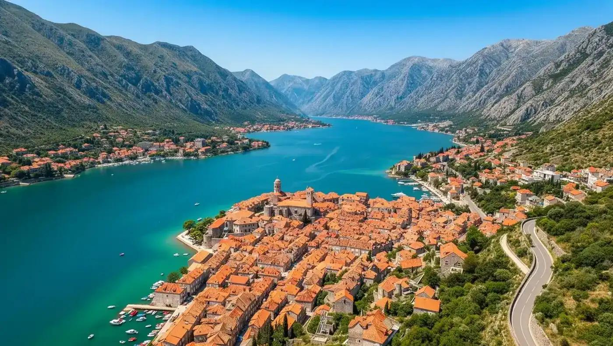

Turistički vodič je sajt koji služi za predstavljanje najljepših mjesta i turističkih atrakcija u Crnoj Gori. Na ovom sajtu posjetioci mogu pronaći informacije o gradovima, plažama, planinama, nacionalnim parkovima i kulturno-istorijskim znamenitostima. Cilj sajta je da pomogne turistima da lakše izaberu mjesta koja žele da posjete i upoznaju prirodne ljepote naše države.
Sajt je namijenjen svim ljudima koji žele da istraže Crnu Goru i saznaju više o njenim turističkim destinacijama. Pomoću slika, kratkih opisa i korisnih informacija, posjetioci mogu da otkriju zanimljiva mjesta i isplaniraju svoj odmor. Ovaj turistički vodič pruža jednostavan i pregledan način da se upoznaju znamenitosti Crne Gore i pronađu ideje za nezaboravno putovanje.
